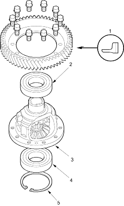
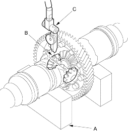

- Place the differential assembly on V-blocks (A) and install both axles.

- Check the backlash of the pinion gears (B) with a dial indicator (C).
STANDARD: 0.05-0.15 mm (0.002-0.006 in.)
- If the backlash is out of standard, replace the differential carrier.